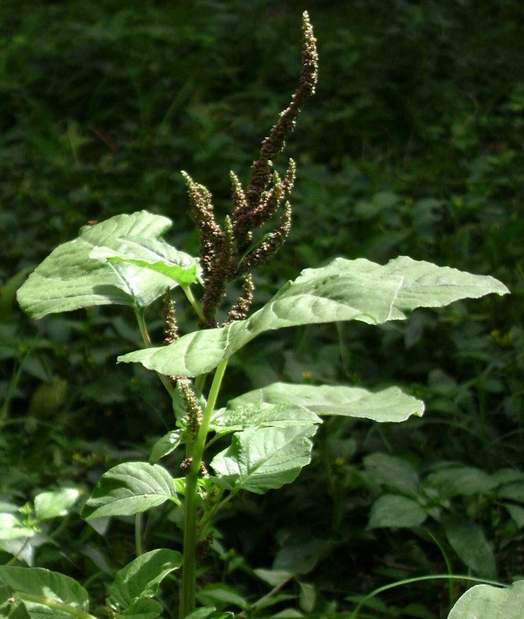

जंगली चौलाईSlender Amaranth
Amaranthus viridis · Amaranthaceae · FLR-0212

- Scientific name वैज्ञानिक नाम
- Amaranthus viridis L.
- Family कुल
- Amaranthaceae
- Hindi हिंदी
- जंगली चौलाई
- Local names स्थानीय नाम
- jangli chaulai, jungli chaulai, chaulai, slender amaranth, green amaranth
- Status here यहाँ की स्थिति
- native
- Movement आवागमन
- Resident, here all year
- IUCN IUCN
- not evaluated
- Review समीक्षा
- audited and independently read
When to look कब देखें
Present all year. साल भर मौजूद।
Uses and possibilities उपयोग और संभावनाएँ
“Traditional medicine” means a documented traditional use, not a claim that it works. Nothing on this page is medical advice.
Drawn from the documented uses in the profile below, where each is labelled traditional, current or a research lead. All uses →
Tell it apart from इनसे अलग पहचानें
जंगली चौलाई / Slender Amaranth
Amaranthus viridis L. — Amaranthaceae
जंगली चौलाई (हरी चौलाई) — खेतों में, बाग़ों में, और सड़कों के किनारे बेतरतीबी से उगने वाली एक छोटी-मोटी बेल। पत्तियाँ गोल-मटोल, हरी, नरम, और खाने योग्य। पारंपरिक चिकित्सा में इसे ठंडी और पोषक दवाई मानते हैं, और गाँवों में इसके पत्तों को साग बनाकर खाया जाता है, खासकर गर्मियों में। गरीब इलाकों में यह सस्ता और पोषक हरा भोजन है।
Quick Identification त्वरित पहचान
| Feature | Description |
|---|---|
| Height & Habit | Erect, slender, branched annual herb, 20–80 cm, stems angular and hairless |
| Leaves | Alternate, ovate to rhombic, 1.5–5 cm, entire margin, smooth, green to slightly purplish |
| Flowers | Tiny, greenish, in terminal and axillary spikes, inconspicuous |
| Inflorescence | Terminal and axillary spikes; distinctly slender compared to other amaranths |
| Seeds | Minute, round, glossy black, 0.7–1 mm |
| Habit | Distinctly more slender and wiry than Bathua or other related weeds |
Field tip: Look for a slender, upright weed with alternate, smooth, egg-shaped leaves (not powdery, not spiny). The leaves are simpler and less fleshy than Lahsua. The plant is noticeably thinner and more wiry than related species. The flower spikes are very thin and inconspicuous — greenish, not showy.
Morphology आकारिकी
| Measurement | Range |
|---|---|
| Plant height | 20–80 cm |
| Leaf length | 1.5–5 cm |
| Leaf width | 1–3.5 cm |
| Flower spike length | 3–10 cm |
| Seed diameter | 0.7–1 mm |
Habit: Erect, slender, branched annual herb; 20–80 cm; stems angular, hairless or sparsely hairy, green.
Leaves: Alternate; ovate to rhombic or lanceolate; 1.5–5 × 1–3.5 cm; margin entire or slightly undulate; both surfaces glabrous; apex obtuse or acute; base cuneate or tapering.
Inflorescence: Terminal and axillary spikes; spikes are slender, 3–10 cm long, composed of small greenish flowers.
Flower: Tiny, greenish, 1.5–2 mm; 3 sepals (not 5 as in some Amaranthus species); 3 stamens; 1 style; no petals.
Fruit (utricle): Enclosed by sepals; small, membranous.
Seeds: Minute, round, flattened, glossy black, 0.7–1 mm diameter; enclosed in a thin, papery utricle that easily splits.
हिंदी: पत्ती अंडाकार, चिकनी, बिना पाउडर के। फूल स्पाइक में, बहुत छोटे, हरे। पूरा पौधा पतली डंडी वाला।
Behaviour & Ecology व्यवहार और पारिस्थितिकी
Amaranthus viridis is a warm-season annual pioneer of disturbed and cultivated soils. It germinates rapidly after monsoon rains and reaches flowering size in 6–8 weeks. The plant is drought-tolerant once established and grows well in poor, compacted, and even saline soils. Growth is moderate and the plant remains relatively small compared to other amaranth species.
The flowers are inconspicuous and primarily wind-pollinated. Seeds are minute and dispersed by water and wind. The plant is palatable to livestock when young; cattle and goats graze the foliage readily. No significant allelopathic effects are recorded. The plant does not strongly compete with crops; it is a minor field weed that is easily removed by hand-pulling.
The plant's fleshy leaves indicate adaptation to warm seasons with moderate moisture.
हिंदी: गर्मी की बेल, कमज़ोर ज़मीन पर भी उगती है। पशु खाते हैं। बीज हवा और पानी से फैलते हैं।
Life Cycle / Phenology जीवन चक्र
| Month / Season | Event |
|---|---|
| May–July | Seed germination; seedling emergence (primarily after monsoon rains) |
| June–August | Rapid vegetative growth; height gain and branching |
| August–October | Flowering initiation; flower spike elongation |
| September–November | Fruit development and seed maturation; continuous seed fall |
| December–January | Plant senescence; continued flowering in mild climates |
| February–March | Plant death; seed bank accumulation |
हिंदी: मई-जून में अंकुरण, अगस्त से फूल, सितंबर-नवंबर में बीज, जनवरी में मर जाता है।
Agricultural / Human Relevance कृषि और मानव संबंध
Food use: The young leaves and tender shoots of jangli chaulai are eaten as a cooked green vegetable (saag) throughout eastern India, particularly in summer. The leaves are nutritious, containing vitamin A, vitamin C, calcium, and iron, though in lower concentrations than cultivated amaranth varieties. Preparation is similar to Bathua: leaves are washed, blanched briefly, and then tempered with mustard oil, garlic, and green chilli. The dish is served with flatbread or rice.
The use is traditional in rural areas, particularly in poorer communities where it provides nutritious greens during the hot season when other leafy vegetables are scarce. The plant is recognized as a famine food — reliable and available when cultivated vegetables fail.
Livestock fodder: The whole plant, when young, is palatable to cattle, sheep, and goats. It is sometimes collected and fed as fodder, though the quantities are usually small owing to the plant's modest biomass.
Medicinal use: In Ayurvedic and folk medicine, the leaves are traditionally used as a cooling (shita) and slightly laxative herb. Modern phytochemical studies confirm the presence of flavonoids and other bioactive compounds, though no specific validated medical use is documented.
Weed status: A minor field weed; easily removed by hand-pulling. No herbicide resistance recorded.
Expected Locally स्थानीय रूप से अपेक्षित
Not a field record. Written from published accounts for eastern Uttar Pradesh. No confirmed local sighting yet — if you have seen it, that is what the atlas needs.
अभी तक स्थानीय पुष्टि नहीं। यह विवरण प्रकाशित स्रोतों से है, किसी अवलोकन से नहीं।
Expected year-round in cultivated fields and vegetable gardens throughout Basti district, with peak presence during monsoon and post-monsoon (June to November). Summer months (May-July) show heavy emergence in newly-tilled fields. Field margins and waste ground are places worth checking. The slender, wiry habit and smooth green leaves distinguish it from related species. The first local record would be a photograph with date and location, sent to the atlas.
Distribution वितरण
Global range: Native to tropical Africa and Asia; widely naturalized in tropical and subtropical regions.
In India: Widespread throughout the Indo-Gangetic plain and Deccan; common in agricultural districts.
In Uttar Pradesh: Abundant in cultivated fields and gardens throughout the state.
In Basti district / eastern UP: Expected in fields and gardens; not yet confirmed by the project.
Research Questions शोध प्रश्न
Anyone can investigate these | कोई भी इन प्रश्नों की जाँच कर सकता है
- Is jangli chaulai eaten as a green vegetable in your village, and if so, what is the traditional preparation? / आपके गाँव में जंगली चौलाई को साग के रूप में खाया जाता है? — Interview 5–10 people; document traditional preparation methods.
- How many grams of fresh jangli chaulai leaves can be harvested from a 1-square-meter area in one growing season? — Conduct harvest trials; record fresh weight and dry weight.
- Do livestock (cattle, sheep, goats) graze jangli chaulai preferentially over nearby Bathua or other weeds? — Observe grazing behaviour in a mixed-weed field.
- If jangli chaulai seeds are stored dry for 12 months, what percentage still germinate? — Conduct seed viability trials.
- How many seeds does a single mature jangli chaulai plant produce? — Count flower spikes; count flowers per spike; estimate seed count. / एक जंगली चौलाई के पौधे में कितने बीज होते हैं?
Similar Species मिलती-जुलती प्रजातियाँ
| Species | How to tell apart | हिंदी |
|---|---|---|
| Bathua (Chenopodium album) | Leaves powdery white on underside; goosefoot-shaped; coarser plant; winter annual | पत्ती पर पाउडर, सर्दी में |
| Lahsua (Digera muricata) | Leaves fleshy, often reddish-tinged; more prostrate growth; larger plant | पत्तियाँ रसदार, लाल रंग के |
| Amaranthus spinosus (Spiny Amaranth) | Leaves with spines at the base; stockier plant; flower spikes more prominent | पत्ती के आधार पर काँटे |
Field rule: A slender, erect herb with alternate, smooth, ovate green leaves (not powdery, not spiny, not fleshy) and very thin greenish flower spikes is jangli chaulai.
Taxonomy & Classification वर्गीकरण
Original description. Carl Linnaeus described Amaranthus viridis in 1753 in Species Plantarum. The genus name Amaranthus is derived from the Greek amarantos (unfading), originally referring to the everlasting flowers; the specific epithet viridis is Latin for green.
Subspecies. Monotypic — no subspecies are currently recognised.
Family and order placement. Placed in the order Caryophyllales, family Amaranthaceae. The genus Amaranthus contains about 70 species, distributed primarily in tropical and subtropical regions.
Phylogenetic notes. Amaranthus viridis is closely related to Amaranthus spinosus, Amaranthus graecizans, and other weedy amaranth species, forming a clade of pan-tropical weeds.
IUCN status rationale. Not evaluated. Widespread and abundant; no conservation threats.
Photo Gallery फोटो गैलरी
No photos yet — add field photos to media/species/jangli_chaulai/ and run node scripts/sync_photos.js.
Photos needed आवश्यक फोटो
- [ ] Whole plant in field (पूरा पौधा खेत में)
- [ ] Close-up of smooth green leaves (पत्तियों का क्लोज़-अप)
- [ ] Slender flower spikes (फूल-स्पाइक)
- [ ] Young plant for identification (नन्हा पौधा)
References संदर्भ
- Linnaeus, C. (1753). Species Plantarum, Vol. 2, p. 1051. Laurentii Salvii, Holmiae.
- Hooker, J.D. (1885). Flora of British India, Vol. 4. L. Reeve & Co., London.
- Kirtikar, K.R. & Basu, B.D. (1935). Indian Medicinal Plants, Vol. 2. Lalit Mohan Basu, Allahabad.
- Botanical Survey of India. Flora of Uttar Pradesh. BSI, Kolkata.
- GBIF Occurrence Data — Amaranthus viridis, India (2015–2026).
- Grubben, G.J.H. & Denton, O.A. (2004). Vegetable Plants for Production in East Africa. PROTA Foundation, Wageningen.
Source file: species/flora/crops_associated/jangli_chaulai.md